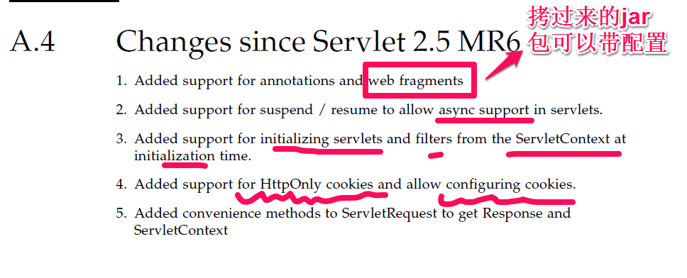
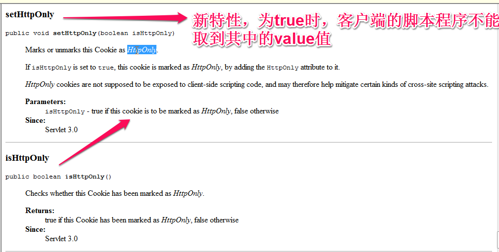

www.jcp.org 所有与java相关的规范
代号：JSR-****
之前：Servlet2.5规范
Servlet3.0前提：
1、JDK6.0+
2、Tomcat7.0+
3、MyEclipse10.0+
特性：
web.xml已经不是必要的了。


1.javax.servlet.http
Interface Part
This class represents a part or form item that was received within a
multipart/form-data POST request.可以用注解的方式代替在web.xml中的配置
1、用注解配置Filter
import java.io.IOException;
import javax.servlet.Filter;
import javax.servlet.FilterChain;
import javax.servlet.FilterConfig;
import javax.servlet.ServletException;
import javax.servlet.ServletRequest;
import javax.servlet.ServletResponse;
import javax.servlet.annotation.WebFilter;
@WebFilter("*.jsp" )
public class FilterDemo1 implements Filter {
public void init(FilterConfig filterConfig) throws ServletException {
}
public void doFilter(ServletRequest request, ServletResponse response,
FilterChain chain) throws IOException, ServletException {
System. out.println("FilterDemo1过滤了" );
chain.doFilter(request, response);
}
public void destroy() {
}
}
2、用注解配置Listener
import javax.servlet.annotation.WebListener;
import javax.servlet.http.HttpSessionEvent;
import javax.servlet.http.HttpSessionListener;
@WebListener
public class MyHttpSessionListener implements HttpSessionListener {
public void sessionCreated(HttpSessionEvent se) {
System. out.println("HttpSession创建了" );
}
public void sessionDestroyed(HttpSessionEvent se) {
}
}
3、用注解配置Servlet
import java.io.IOException;
import java.io.PrintWriter;
import java.util.Enumeration;
import javax.servlet.ServletConfig;
import javax.servlet.ServletException;
import javax.servlet.annotation.WebInitParam;
import javax.servlet.annotation.WebServlet;
import javax.servlet.http.HttpServlet;
import javax.servlet.http.HttpServletRequest;
import javax.servlet.http.HttpServletResponse;
@WebServlet(value = { "/servlet/ServletDemo1" , "/servlet/ServletDemo11" }, initParams = {
@WebInitParam(name = "encoding" , value = "UTF-8"),
@WebInitParam(name = "XXX" , value = "YYY") })
public class ServletDemo1 extends HttpServlet {
public void doGet(HttpServletRequest request, HttpServletResponse response)
throws ServletException, IOException {
response.setContentType( "text/html;charset=UTF-8");
PrintWriter out = response.getWriter();
out.write( "ServletDemo1<hr/>");
ServletConfig cfg = getServletConfig();
Enumeration e = cfg.getInitParameterNames();
while(e.hasMoreElements()){
String paramName = (String)e.nextElement();
out.write(paramName+ "="+cfg.getInitParameter(paramName)+"<br/>" );
}
}
public void doPost(HttpServletRequest request, HttpServletResponse response)
throws ServletException, IOException {
doGet(request, response);
}
}
4、用Servlet3.0新特性简单实现文件上传：
@WebServlet("/servlet/UploadServlet" )
@MultipartConfig//说明处理的是multipart /form-data类型
public class UploadServlet extends HttpServlet {
public void doGet(HttpServletRequest request, HttpServletResponse response)
throws ServletException, IOException {
request.setCharacterEncoding( "UTF-8");
String username = request.getParameter("username" );
//Part接口：相当于FileItem，代表着表单中的每一部分
//String photo = request.getParameter("photo");
Part photoPart = request.getPart( "photo");
//截取文件名
String headerValue = photoPart.getHeader("Content-Disposition" );
//System.out.println(headerValue);//form-data; name="photo"; filename="0.jpg"
int index = headerValue.indexOf("filename=" );
String fileName = headerValue.substring(index+10, headerValue.length()-1);
photoPart.write(getServletContext().getRealPath( "/files")+"/" +fileName);
}
public void doPost(HttpServletRequest request, HttpServletResponse response)
throws ServletException, IOException {
doGet(request, response);
}
}
